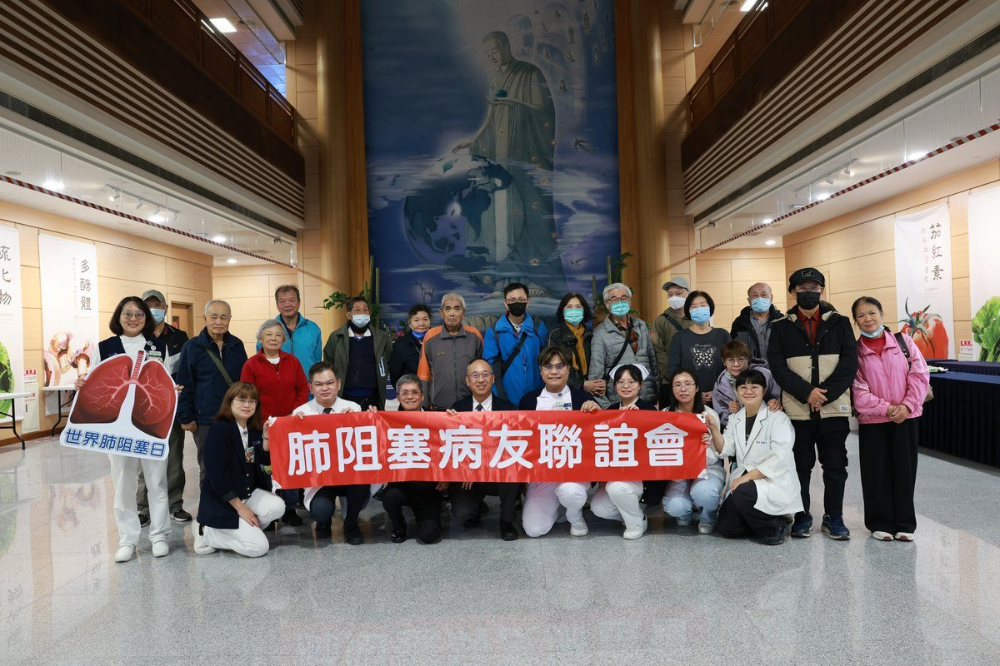

花蓮慈院跨團隊守護呼吸健康 肺阻塞病友會歡唱卡祖笛

可樂電子報小編/編輯
花蓮慈濟醫院胸腔內科11月21日舉辦「肺阻塞－順暢呼吸．樂活人生」病友會。集結醫師、護理師、營養師、社工師、呼吸治療師跨領域合作，內容涵蓋疫苗防護、營養照護、身心障礙證明及輔具補助，並安排呼吸訓練；其中最受歡迎的卡祖笛體驗，引導病友配合樂句長短與節奏控制氣流輸出，輕鬆歡唱《蘭花草》、《雨夜花》、《歡喜就好》等耳熟能詳的歌曲。

慢性阻塞性肺病（COPD，簡稱肺阻塞）是一種因呼吸道長期發炎與阻塞，導致氣流受阻、呼吸困難的慢性肺部疾病，常見症狀包括慢性咳嗽、咳痰及活動時喘促；若未妥善控制，容易因感染引發急性惡化，進而影響日常活動與生活品質。
每年11月的第三個星期三是世界肺阻塞日。胸腔內科主任林智斌指出，花東幅員廣大，醫療資源相對不容易取得，而醫療照護也不只停留在門診看病、拿藥、回家。這次，個案管理師侯惠娟精心策畫病友會，主要是邀請病友相聚交流，同時可以獲得更多的健康資訊，幫助病友及家屬對疾病的認識與自我照護能力，也透過活動宣導，喚起大眾對肺阻塞的認識、預防與早期診斷照護的重視。

活動由林智斌主任致詞揭開序幕後，胸腔科劉迪塑醫師主講「『打』造防護罩：疫苗全攻略」，詳細說明流感疫苗、新冠疫苗、肺炎鏈球菌疫苗、呼吸道融合病毒疫苗、帶狀皰疹疫苗、百日咳三合一疫苗等接種重點，希望能協助病友掌握疫苗建立防護網，降低感染風險。

接著由營養科徐彰怡營養師說明「吃對營養，呼吸更有力：肺阻塞營養照護與飲食調整」，教導病友透過均衡飲食維持體力；曾惠欣社工師則帶來「一站式搞懂：身心障礙證明及輔具補助／諮詢交流」，協助病友與家屬瞭解相關福利與補助資源，減輕照護負擔。

此外，花蓮慈院慢性肺阻塞照護團隊特別邀請門諾醫院王秀蓮呼吸治療師帶領「用音樂練呼吸：卡祖笛裡帶你找回呼吸節奏」，透過卡祖笛與唱歌練習呼吸節奏，讓呼吸訓練更有趣、易於融入生活。課程最後亦安排全體講師群參與的病友交流討論時間，當場解答照護疑問並促進病友間的經驗分享，其中更有收案超過八年的病友，在個管師侯惠娟「苦口婆心」的陪伴與關懷下，戒菸成功，成為現場令人動容的見證。

📸 更多現場紀實影像


🌟 掌握花蓮在地第一手資訊・歡迎訂閱追蹤
深度紀實報導、在地精采影音專題，第一時間接收最新消息！